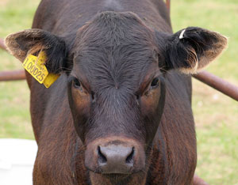

On July 13, the Union of Concerned Scientists’ Margaret Mellon testified before the House Rules Committee in a hearing on H.R. 1549, the Preservation of Antibiotics for Medical Treatment Act (PAMTA).
Mellon explained the scientific case connecting antibiotic resistance with the practice of feeding antibiotics to livestock and poultry that are not sick. This is of particular concern as Congress considers measures to increase food safety, as the bacteria most commonly associated with food-borne illnesses are also likely to resist drug treatment.
Mellon also offered detailed analysis confirming that swift congressional action on PAMTA is the only way to keep antibiotics working and to protect the food supply and our health.
Read Mellon’s full testimony for more information.
|
 FOXYPAR4/FLICKR Food animal production uses the lion’s share of the antibiotics in the United States - some 13 million pounds of antibiotics every year, which is about 70 percent of the nation’s total antibiotics use. |
|
|